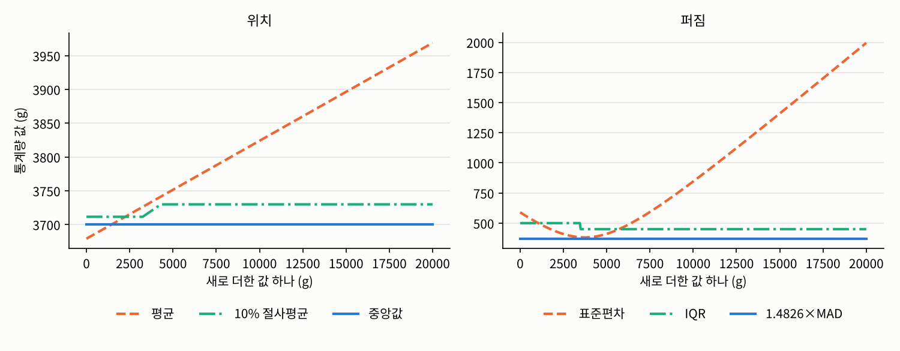

3.4 이상치에 흔들리지 않는 통계량
3장 데이터를 숫자로 요약하기 · 로버스트함과 붕괴점
들어가며
3장에서 지금까지 다룬 숫자들 중 평균, 표준편차, 왜도, 첨도는 동떨어진 값에 민감하고, 중앙값, 사분위 범위, MAD는 그렇지 않다는 이야기를 여러 번 했습니다. 이번 글에서는 이 차이를 직접 확인하고 비교하는 방법을 다룹니다.
먼저 입력 실수 하나가 여러 통계량을 어떻게 바꾸는지 보고, 값 하나를 움직여 가며 통계량의 반응을 그린 민감도 곡선과, 통계량이 버틸 수 있는 오염의 한계를 나타내는 붕괴점을 소개합니다. 그다음 이상치를 찾을 때 이 차이가 왜 중요한지, 그리고 극단값에 강한 통계량을 쓰는 데 어떤 대가가 따르는지 살펴보겠습니다.
0 하나를 더 쳤을 뿐인데
2.5에서 본 턱끈펭귄 68마리의 몸무게 데이터를 누군가 입력하다가, 3700g인 펭귄 한 마리를 37000g으로 잘못 입력했다고 해 보겠습니다. 0 하나를 더 친 흔한 실수입니다. 여러 통계량이 어떻게 바뀌는지 보겠습니다.
import numpy as np
import seaborn as sns
from scipy import stats
penguins = sns.load_dataset("penguins").dropna(subset=["body_mass_g"])
x = penguins.loc[penguins["species"] == "Chinstrap", "body_mass_g"].to_numpy()
x_typo = x.copy()
i = np.flatnonzero(x_typo == 3700)[0]
x_typo[i] = 37000 # 3700을 37000으로 잘못 입력
def summary(d):
q1, med, q3 = np.quantile(d, [0.25, 0.5, 0.75], method="averaged_inverted_cdf")
mad = np.median(np.abs(d - med))
return [d.mean(), stats.trim_mean(d, 0.1), med, d.std(ddof=1), q3 - q1, 1.4826 * mad]
names = ["평균", "10% 절사평균", "중앙값", "표준편차", "IQR", "1.4826×MAD"]
for name, a, b in zip(names, summary(x), summary(x_typo)):
print(f"{name:12s}: {a:8.1f} → {b:8.1f}")평균 : 3733.1 → 4222.8
10% 절사평균 : 3719.6 → 3730.4
중앙값 : 3700.0 → 3700.0
표준편차 : 384.3 → 4052.4
IQR : 475.0 → 500.0
1.4826×MAD : 370.6 → 370.668개 중 단 하나가 틀렸을 뿐인데, 평균은 3733g에서 4223g으로 약 490g 뛰었습니다. 턱끈펭귄의 “평균적인 몸무게”가 갑자기 젠투펭귄 쪽으로 다가간 셈입니다. 표준편차는 384g에서 4052g으로 10배 넘게 커졌습니다. 이 숫자만 보면 턱끈펭귄의 몸무게가 엄청나게 들쭉날쭉한 것처럼 보입니다.
반면 중앙값과 MAD는 전혀 바뀌지 않았고, 10% 절사평균과 IQR은 조금만 바뀌었습니다. 오타 하나가 어떤 숫자에는 재앙이고 어떤 숫자에는 아무 일도 아닙니다.
민감도 곡선
값 하나가 통계량에 미치는 영향을 더 체계적으로 보기 위해, 턱끈펭귄 68마리의 데이터에 새 값 하나를 더하고 그 값을 0g부터 20000g까지 움직여 가며 각 통계량이 어떻게 변하는지 그려 보겠습니다. 이런 그림을 민감도 곡선(sensitivity curve)이라고 합니다.

그림에서 통계량들은 세 무리로 나뉩니다.
- 평균과 표준편차는 새 값이 멀어질수록 끝없이 커집니다. 새 값이 20000g이 아니라 2000000g이었다면 평균과 표준편차도 그에 맞춰 얼마든지 커졌을 것입니다. 값 하나가 통계량을 원하는 만큼 멀리 끌고 갈 수 있다는 뜻입니다.
- 10% 절사평균과 IQR은 새 값이 데이터 근처에 있을 때는 조금 반응하지만, 일정 거리를 넘어가면 평평해집니다. 새 값이 아주 커지면 어차피 잘려 나가는 양 끝 10%나 25%에 들어가 버리기 때문입니다.
- 중앙값과 MAD는 거의 움직이지 않습니다. 새 값이 아무리 커져도 “가운데 줄에 서 있는 값”은 기껏해야 한 칸 옆으로 밀릴 뿐입니다.
3.1에서 평균은 제곱 거리, 중앙값은 절대 거리를 최소로 만드는 값이라고 했던 것이 여기서 그대로 드러납니다. 제곱 거리는 멀리 떨어진 값 하나에 엄청난 무게를 실어 주고, 평균은 그 무게에 끌려갈 수밖에 없습니다.
붕괴점
민감도 곡선은 값 하나의 영향을 봅니다. 한 걸음 더 나아가, 데이터의 얼마만큼이 오염되어야 통계량이 완전히 망가지는지를 물을 수도 있습니다.
붕괴점은 “통계량이 버틸 수 있는 오염의 한계”입니다.1 정확한 정의는 조금 더 복잡하지만, 직관적으로는 이 정도로 충분합니다. 지금까지 다룬 통계량의 붕괴점을 대략 정리하면 다음과 같습니다.
| 통계량 | 붕괴점 | 이유 |
|---|---|---|
| 평균, 표준편차, 범위 | \(1/n\) | 값 하나만 바꿔도 얼마든지 커집니다 |
| \(\alpha\) 절사평균 | 약 \(\alpha\) | 양 끝 \(\alpha\)만큼은 잘려 나가므로 그보다 많이 오염되어야 합니다 |
| 사분위 범위 | 약 25% | 양 끝 25%까지는 버텨 냅니다 |
| 중앙값, MAD | 약 50% | 절반 가까이를 바꿔야 가운데 값이 움직입니다 |
평균의 붕괴점 \(1/n\)은 데이터가 많아질수록 0에 가까워집니다. 데이터가 백만 개라도 값 하나면 충분하다는 뜻입니다. 반면 중앙값은 절반 가까이가 엉망이어도 버팁니다. 붕괴점은 50%보다 클 수 없는데, 데이터의 절반 넘게가 오염되면 어느 쪽이 “진짜” 데이터인지 구분할 방법 자체가 없기 때문입니다. 그런 의미에서 중앙값과 MAD는 가장 로버스트한 통계량입니다.
3.3의 왜도와 첨도도 평균과 표준편차로 만든 값이라 붕괴점이 \(1/n\)이고, 세제곱과 네제곱을 쓰는 만큼 값 하나에 대한 반응은 더 극단적입니다.
이렇게 극단값이나 오염에 크게 흔들리지 않는 성질을 로버스트함(robustness)이라고 하고, 이를 체계적으로 연구하는 분야를 로버스트 통계(robust statistics)라고 합니다.2
이상치를 찾을 때의 함정
이상치를 찾는 가장 단순한 방법은 3.3의 z-점수를 계산해서 절댓값이 너무 큰 값, 예를 들어 3보다 큰 값을 의심하는 것입니다. 그런데 이 방법에는 함정이 있습니다. 오타가 섞인 턱끈펭귄 데이터로 확인해 보겠습니다. 오타 37000g과 함께, 2.5의 박스 플롯에서 원래부터 이상치로 표시되었던 4800g과 2700g의 z-점수를 보겠습니다.
import numpy as np
import seaborn as sns
penguins = sns.load_dataset("penguins").dropna(subset=["body_mass_g"])
x = penguins.loc[penguins["species"] == "Chinstrap", "body_mass_g"].to_numpy()
x_typo = x.copy()
x_typo[np.flatnonzero(x_typo == 3700)[0]] = 37000
z = (x_typo - x_typo.mean()) / x_typo.std(ddof=1)
med = np.median(x_typo)
robust_z = (x_typo - med) / (1.4826 * np.median(np.abs(x_typo - med)))
for v in [37000, 4800, 2700]:
k = np.flatnonzero(x_typo == v)[0]
print(f"{v:6.0f} g: z-점수 {z[k]:+6.2f}, 로버스트 z-점수 {robust_z[k]:+7.2f}") 37000 g: z-점수 +8.09, 로버스트 z-점수 +89.84
4800 g: z-점수 +0.14, 로버스트 z-점수 +2.97
2700 g: z-점수 -0.38, 로버스트 z-점수 -2.70보통의 z-점수로 보면 37000g은 +8.09로 이상치로 잡히지만, 4800g과 2700g은 z-점수가 0.14와 −0.38로 완벽하게 평범한 값처럼 보입니다. 오타 하나가 표준편차를 10배로 부풀려 놓았기 때문에, 그 표준편차로 잰 다른 값들의 거리가 모두 작아져 버린 것입니다. 이렇게 큰 이상치가 다른 이상치를 가려 버리는 현상을 가려짐 효과(masking effect)라고 합니다.
해결책은 z-점수의 평균과 표준편차를 로버스트한 통계량으로 바꾸는 것입니다.
3.2에서 본 것처럼 종 모양 데이터에서는 \(1.4826 \cdot \mathrm{MAD}\)가 표준편차와 비슷하므로, 데이터가 깨끗하면 로버스트 z-점수는 보통의 z-점수와 비슷합니다. 하지만 이상치가 섞여도 중앙값과 MAD는 흔들리지 않으므로, 이상치가 다른 이상치를 가리지 못합니다. 위 결과에서 로버스트 z-점수는 37000g을 +89.84로 확실히 잡아내고, 4800g과 2700g도 약 ±3으로 다른 값들보다 눈에 띄게 떨어져 있음을 보여 줍니다.
물론 2.5에서 말했듯이, 이상치로 표시된 값은 오류라는 뜻이 아니라 들여다볼 대상이라는 뜻입니다. 37000g은 들여다보면 오타라는 것이 분명하니 고치면 되지만, 4800g짜리 턱끈펭귄은 그냥 덩치가 큰 개체일 가능성이 높으니 함부로 지우면 안 됩니다.
로버스트함에도 대가가 있습니다
그렇다면 항상 중앙값과 MAD를 쓰면 될까요? 그렇지는 않습니다. 로버스트함에는 대가가 따릅니다.
중앙값은 데이터의 순서만 쓰고 값의 크기는 거의 버립니다. 가운데 줄에 누가 서 있는지만 보고, 양쪽의 값이 얼마나 큰지는 보지 않습니다. 데이터가 깨끗하고 좌우 대칭인 종 모양이라면, 이렇게 버린 정보 때문에 중앙값은 평균보다 덜 정확한 추정값이 됩니다. 정규분포를 따르는 데이터가 많을 때, 표본 중앙값이 흔들리는 정도(분산)는 표본 평균의 약 \(\pi/2 \approx 1.57\)배입니다. 같은 정확도를 얻으려면 중앙값을 쓸 때 데이터가 약 57% 더 필요하다는 뜻입니다.
“추정값이 흔들리는 정도”라는 말은 데이터를 확률변수로 볼 때 비로소 정확한 의미를 갖는데, 이는 5장의 표집 분포와 6장의 점 추정에서 정식으로 다룹니다. 지금은 로버스트함과 효율 사이에 줄다리기가 있다는 것만 기억해 두면 충분합니다. 데이터가 깨끗하면 평균이 낫고, 더러울수록 중앙값이 낫습니다. 절사평균은 그 사이에서 균형을 잡는 한 가지 방법입니다.
그래서 무엇을 보고할까요?
정해진 답은 없지만, 실용적인 기준을 정리하면 다음과 같습니다.
- 먼저 그림을 봅니다. 히스토그램이나 박스 플롯으로 분포의 모양과 이상치를 확인하는 것이 어떤 숫자를 고르는 것보다 먼저입니다.
- 좌우 대칭에 가깝고 이상치가 없으면 평균과 표준편차를 보고합니다. 효율이 좋고, 이후의 추론 방법들이 대부분 이 두 숫자를 바탕으로 합니다.
- 한쪽으로 크게 치우쳤거나 이상치가 있으면 중앙값과 사분위 범위를 보고합니다. 소득, 집값, 대기 시간 같은 데이터가 여기에 해당합니다.
- 애매하면 둘 다 보고합니다. 평균과 중앙값이 크게 다르다는 것 자체가 분포의 모양에 대한 중요한 정보입니다.
- 이상치는 지우기 전에 이유를 찾습니다. 오타나 측정 오류가 분명하면 고치거나 빼고, 그 사실을 밝힙니다. 이유를 모르면 이상치를 포함한 결과와 뺀 결과를 둘 다 보여 주는 것도 방법입니다.
정리
이번 글에서는 통계량이 극단값에 얼마나 흔들리는지를 다루었습니다.
- 입력 실수 하나로 평균은 크게 움직이고 표준편차는 10배 넘게 커졌지만, 중앙값과 MAD는 그대로였습니다.
- 민감도 곡선에서 평균과 표준편차는 값 하나에 끝없이 끌려가고, 절사평균과 IQR은 한계가 있으며, 중앙값과 MAD는 거의 움직이지 않습니다.
- 붕괴점은 통계량을 망가뜨리는 데 필요한 오염의 최소 비율로, 평균은 \(1/n\), 중앙값과 MAD는 약 50%입니다.
- 보통의 z-점수로 이상치를 찾으면 큰 이상치가 다른 이상치를 가리는 가려짐 효과가 생기므로, 중앙값과 MAD로 만든 로버스트 z-점수가 더 안전합니다.
- 로버스트한 통계량은 깨끗한 데이터에서 효율이 떨어지는 대가를 치릅니다. 그림을 먼저 보고, 데이터에 맞는 숫자를 고르는 것이 가장 중요합니다.
3장에서는 변수 하나의 분포를 숫자로 요약했습니다. 그런데 실제로 우리가 궁금한 것은 “부리가 긴 펭귄이 몸무게도 더 나갈까?”처럼 두 변수 사이의 관계인 경우가 많습니다. 4장에서는 두 변수를 함께 보는 표와 그림, 그리고 그 관계를 숫자로 나타내는 상관계수를 다루겠습니다.
연결되는 개념
- \(\leftarrow\) 이전 개념: 3.3 모양과 표준화
- \(\rightarrow\) 다음 개념: 4 두 변수 사이의 관계
Footnotes
붕괴점의 개념은 F. R. Hampel, “A General Qualitative Definition of Robustness”, The Annals of Mathematical Statistics 42(6), 1971, pp. 1887–1896에서 정식화되었습니다.↩︎
로버스트 통계의 출발점이 된 논문으로 P. J. Huber, “Robust Estimation of a Location Parameter”, The Annals of Mathematical Statistics 35(1), 1964, pp. 73–101을, 교재로 P. J. Huber & E. M. Ronchetti, Robust Statistics, 2nd ed., Wiley, 2009를 참고할 수 있습니다.↩︎